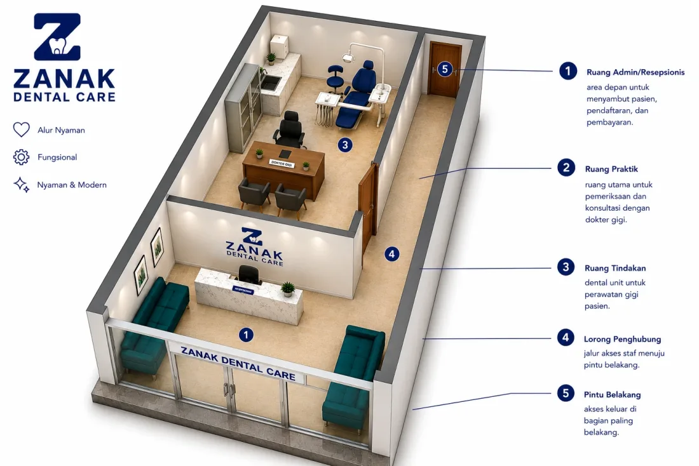
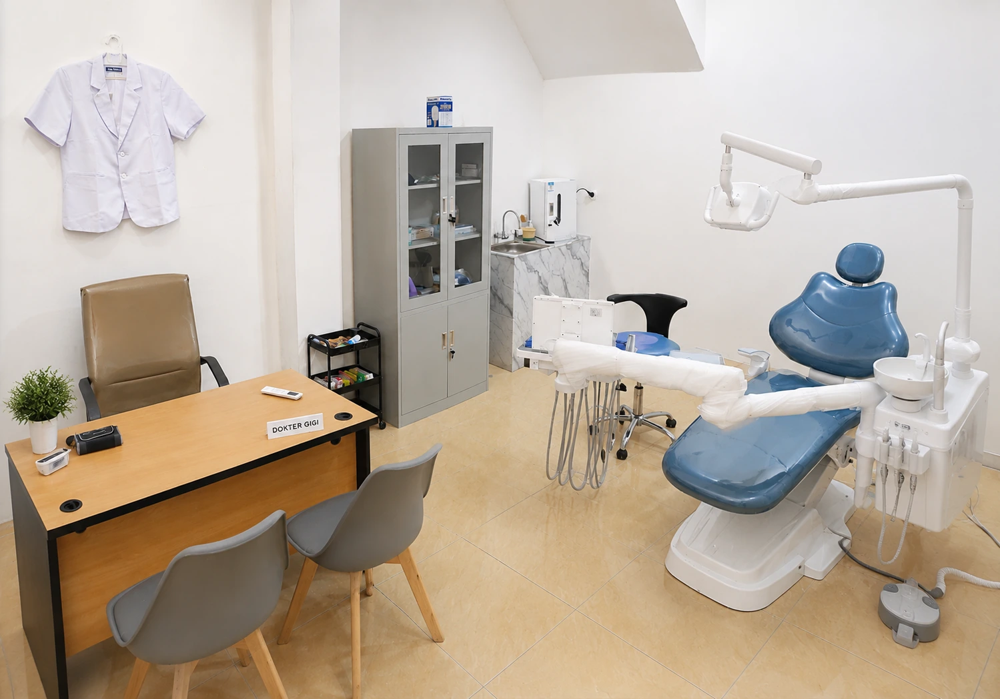

Pencegahan
Scaling
Pembersihan karang gigi dan plak yang menempel di permukaan gigi menggunakan ultrasonic scaler.
DetailZanak Dental Care melayani perawatan gigi sehari-hari — dari scaling, tambal, cabut, hingga perawatan saluran akar dan ortodontik.
Nama Zanak berasal dari kata sanak — saudara dalam bahasa Minang. Filosofinya sederhana: pasien diperlakukan seperti keluarga, bukan sekadar nomor antrean.

Tindakan dilakukan langsung oleh dokter gigi, sesuai kebutuhan dan kondisi klinis Anda.
Pembersihan karang gigi dan plak yang menempel di permukaan gigi menggunakan ultrasonic scaler.
DetailPenambalan kavitas akibat karies menggunakan bahan GIC atau resin komposit, sesuai indikasi klinis.
DetailPencabutan gigi yang sudah tidak dapat dipertahankan karena kerusakan berat, infeksi, atau keperluan ortodontik.
DetailTindakan untuk menyelamatkan gigi yang pulpanya terinfeksi atau nekrosis akibat karies dalam.
DetailPengangkatan gigi molar tiga (gigi bungsu) yang mengalami impaksi.
DetailPerawatan untuk koreksi susunan gigi yang tidak rata, renggang, atau gigitan yang tidak ideal.
DetailPembuatan protesa lepasan untuk menggantikan gigi yang hilang.
DetailBelum tahu butuh tindakan apa? Dokter akan memeriksa dan merekomendasikan rencana perawatan. Gunakan tombol Reservasi di atas untuk membuat jadwal.
Peralatan standar untuk mendukung tindakan yang aman dan nyaman bagi pasien.

Ruang PeriksaRuang tunggu dengan pencahayaan hangat dan area duduk yang nyaman.
Kursi perawatan dengan posisi yang dapat disesuaikan dan lampu operasi LED.
Instrumen disterilkan dengan autoclave sebelum digunakan pada setiap pasien.
Digunakan untuk pembersihan karang gigi.
Dilakukan sesuai kebutuhan sebelum tindakan yang memerlukannya.
Riwayat perawatan tersimpan digital, dengan reminder kontrol via WhatsApp.
S.K.G · Universitas Andalas, 2022
Profesi Dokter Gigi · Universitas Andalas, 2025
Menjalani internship di Puskesmas Sidorahayu, Puskesmas Sukadamai, dan RSUD Sekayu sebelum membuka praktik di Payakumbuh Utara.
Jadwal operasional kami sepanjang minggu.
Kepercayaan pasien adalah ukuran paling jujur untuk kualitas layanan kami.
"Pertama kali ke dokter gigi tanpa rasa takut berlebihan. Dokternya menjelaskan setiap langkah prosedur sebelum dilakukan. Scaling selesai cepat dan tidak sakit sama sekali."
"Akhirnya ada klinik gigi yang benar-benar dekat dari rumah di Payakumbuh Utara. Prosedur kawat gigi dijelaskan dengan jelas, termasuk estimasi durasi dan progresnya."
"Saya bawa anak yang sangat takut dokter gigi. Dokter Daffa sabar dan mengajak ngobrol dulu sebelum memulai tindakan. Hasilnya anak saya tidak menangis sama sekali."
"Booking online-nya gampang, tinggal pilih tanggal dan jam sendiri. Gigi tiruan yang saya pasang presisi dan nyaman sejak hari pertama."
"Odontektomi gigi bungsu jauh lebih terencana dari ekspektasi saya. Ada konsultasi dulu, baru prosedur. Dokternya jelasin semua risikonya dengan tenang. Pemulihannya juga lancar."
Ulasan Anda membantu pasien lain mengambil keputusan yang tepat.
Tulis Ulasan di GoogleBelum menemukan jawaban? Hubungi kami langsung melalui WhatsApp.
Reservasi dapat dilakukan online melalui tombol "Reservasi" di website ini — pilih tanggal dan jam sendiri hingga 30 hari ke depan, lalu konfirmasi akan dikirim melalui WhatsApp.
Ya. drg. Muhammad Daffa Safra memiliki STR (Surat Tanda Registrasi) aktif dan merupakan lulusan Profesi Dokter Gigi Universitas Andalas.
Senin–Kamis pukul 08.00–17.00, Jumat pukul 08.00–16.00, dan Sabtu pukul 08.00–12.00. Klinik tutup pada hari Minggu.
Pembayaran dapat dilakukan secara tunai (cash) atau transfer bank.
Ya, kami melayani perawatan gigi anak, termasuk tambal gigi susu dan pencabutan gigi susu yang tidak mau tanggal sendiri.
Gunakan tombol "Cek Reservasi" yang tersedia di seluruh halaman website untuk melihat status antrean menggunakan kode reservasi Anda.
Ya, tersedia layanan pemasangan dan kontrol rutin kawat gigi (ortodontik) dengan konsultasi awal terlebih dahulu.
Kami berlokasi di Jl. Sudirman No.7, Kaniang Bukik, Kecamatan Payakumbuh Utara, Kota Payakumbuh, Sumatera Barat.
Jl. Sudirman, Payakumbuh Utara.